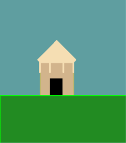
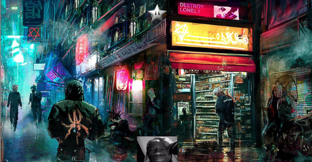
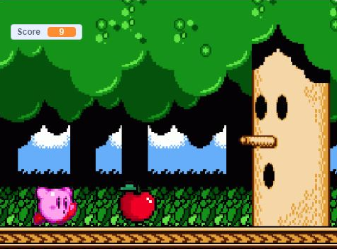
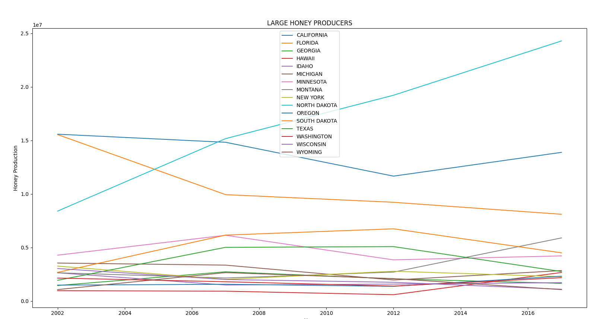
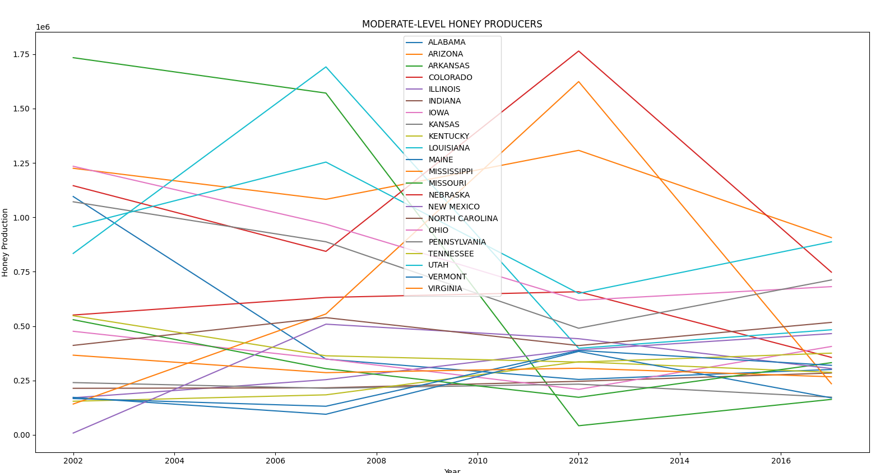
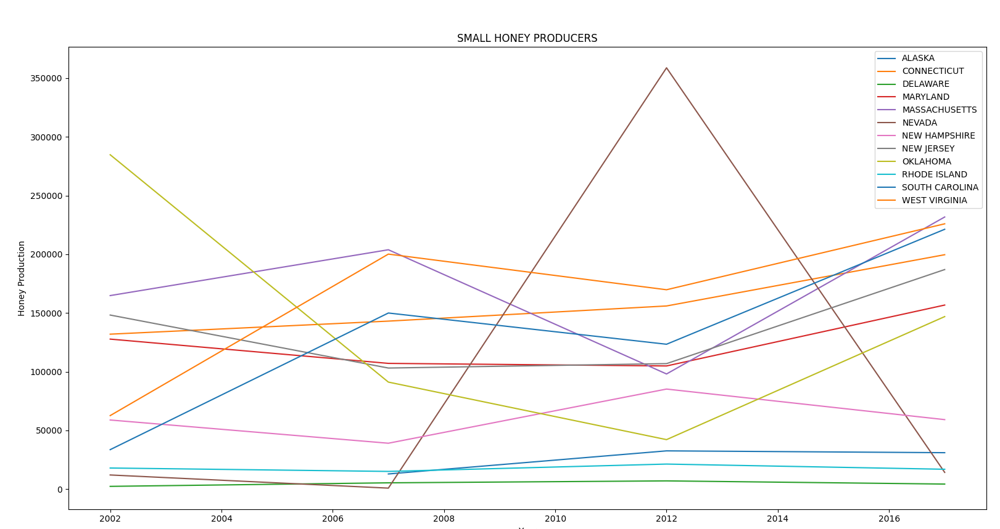
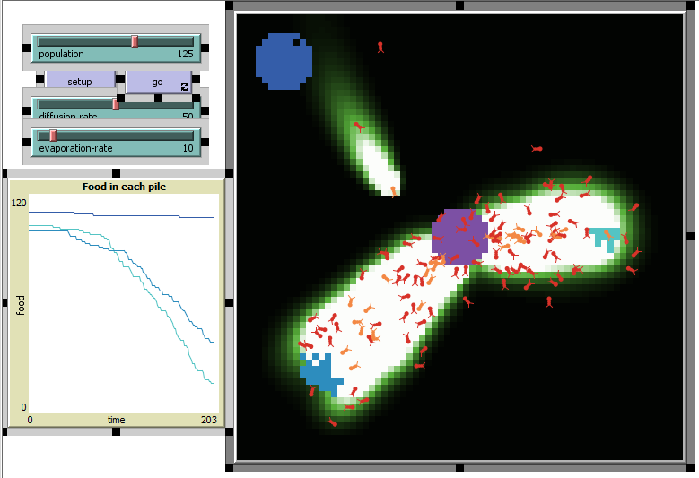

Portfolio
Home
Portfolio
About Me
This is my Portfolio Page!
1.1.9 "Which House Are You"

In this project, a house is created based on user input. A quiz is used to ask questions to the user and the user responds by inputting a number 1-4 for each question. If a number greater than 4 is put in on any question, the quiz ends immediately. Based on the accumulated number at the end, a certain house is created. The houses available are: the barn, the basic house, the fun house, and the epic hut.
1.2.5 "Star Catcher 2077"

For this project, the goal is to drop the 'star' object within a certain amount of time into a designated basket, which in this case is represented by a picture of Travis Scott. The star is controlled by using 'a' to move left, 'd' to move right, and 's' to drop down. Once the star makes contact with the basket, the score increases by 1 and the basket randomly moves to the left or right, moving each time the score is increased.
Scratch Project "Kirby Dash"

In this project, instead of working on Python, we worked on Scratch. The user controls Kirby and is meant to avoid getting hit by apples for as long as possible to achieve a high score. Kirby can jump using 'space' and duck using 'down' to avoid getting hit. If a certain score is achieved by the player, Kirby transforms into Meta Knight, another character from the same video game series. The game ends upon the player getting hit by an apple.
3.2.4 Making Meaning From Data



This project is different compared to the others as this time we did not have to make something unique compared to others in the class. For this project we gathered data on honey production by state over the course of years from the USDA, uploaded the data onto a spreadsheet, then we displayed the data into several graphs with labels and a legend. The four major graphs included data on every state, data from small-level honey producers, data from moderate-level honey producers, and data from high-level honey producers.
4.1.4 Understanding Complex Systems: "Ants"

This project uses NetLego and we choose which model in its model library to observe and take notes of. We decided to observe the model titled "Ants", which is a simulation how how ants travel to find food, while they also use chemical trails to assist other ants in finding food quicker. All the ants are turtles, and the chemical trails are represented by green and white patches. Ants with food are turned orange while red ants do not have food.
-
-
-